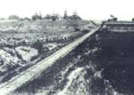
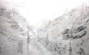
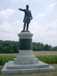
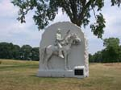
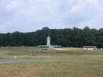
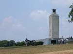
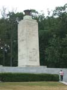

| page 5 of 11 |
| Day One with Prof. Gary Gallagher 7/26/2001 |
UCLA at Gettysburg Journal |
| page 5 of 11 |
|  |
||
| In the central portion of the cut, the banks were too steep for the Confederates to see out or fire at the Federals to the south. | East end of the cut looking east toward Gettysburg. The 6th Wisconsin straddled the railroad at this point (facing the camera) and poured a volley into the left flank of the Confederates in the cut. | The railroad cut about 1869 looking east toward Gettysburg. |
|  |
 |
 |
| A sketch of the surrender of the Confederates in the railroad cut by Alfred R. Waud. The steepness of the cut is very much exagerated. | Maj. Gen. James Wadsworth (near railroad cut) | Monument to the 17th Penn. Cavalry (part of Buford's division) on Oak Ridge. |
|  |
 |
 |
| The Peace Memorial on Oak Hill. (facing north) | The Peace Memorial. | The peace monument on Oak Hill. Note man with Confederate flag posing for a picture - everyone has his own interpretation of peace... |